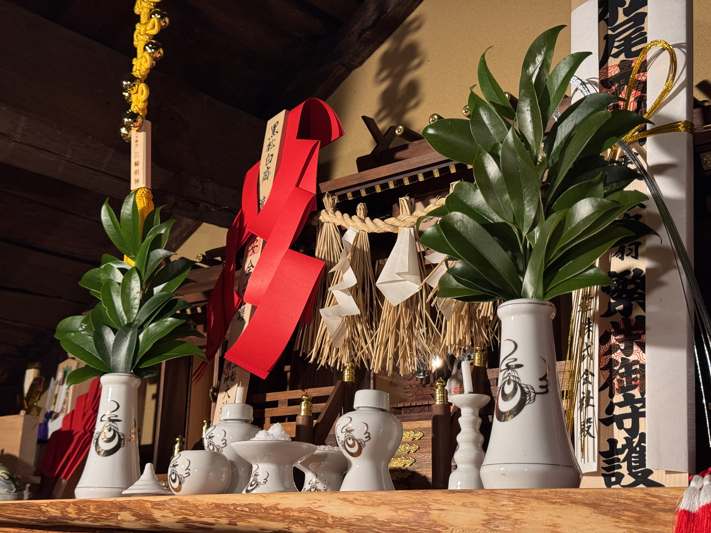
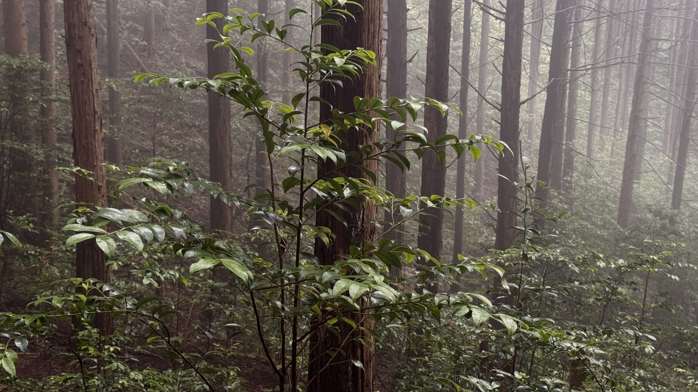
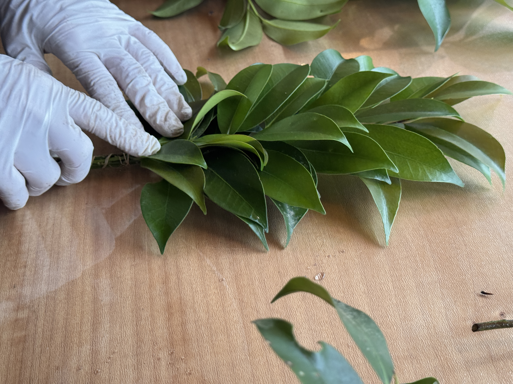
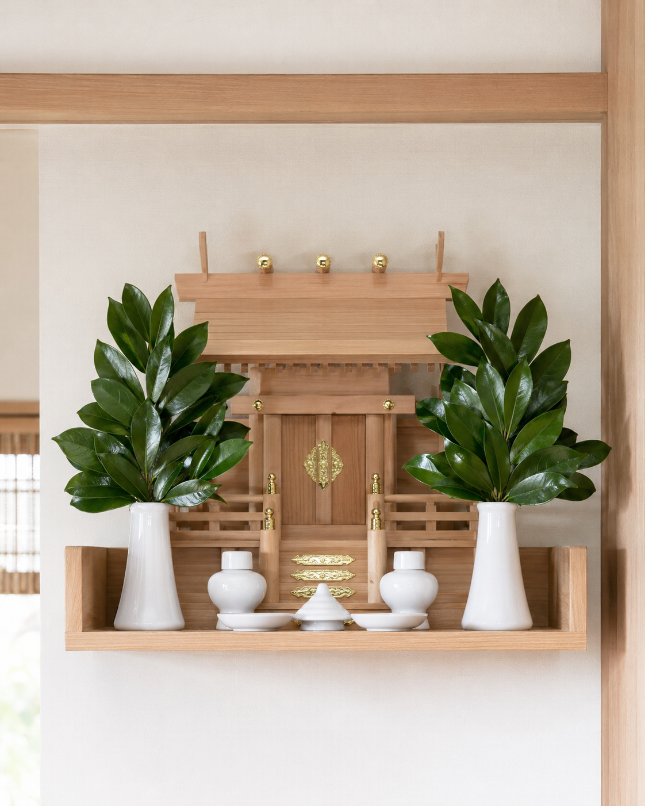
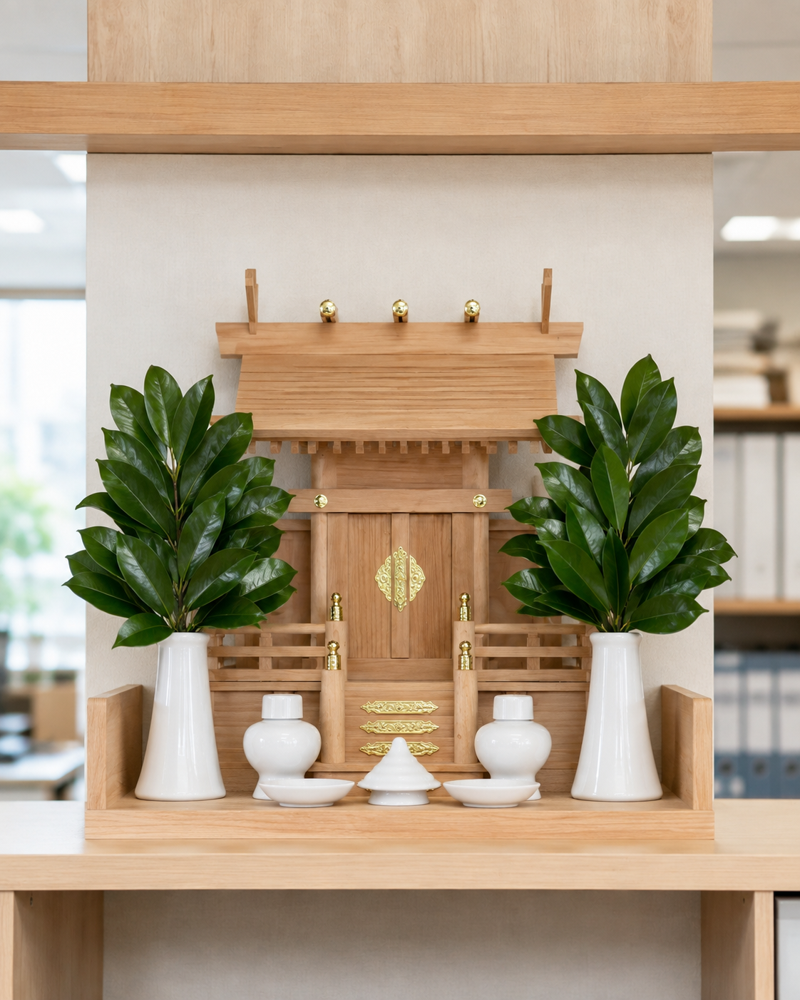
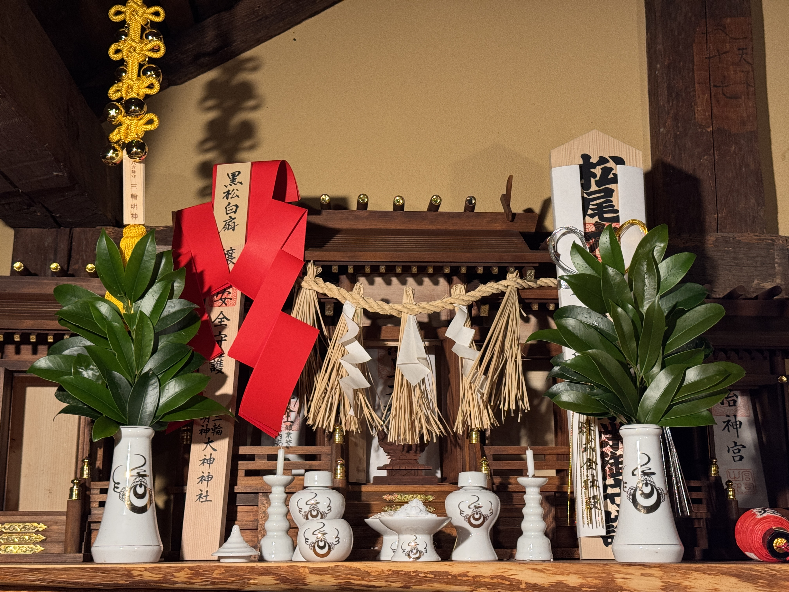

一般的な流通の一例
- 採取
- 集荷
- 市場
- 小売店
- 店頭
複数の工程を経るため、購入時点では採取から何日経っているか分からない場合があります。

岐阜県産・国産天然本榊の定期便
岐阜県の山に自生する、国産天然の本榊。
発送日に山で採取し、選別して束ね、
毎月お届けします。
Our Thought
神棚は、毎日長い時間眺めるものではありません。
それでも、仕事を始める前や、
一日の節目にふと目に入ることがあります。
そのとき、立派な榊が左右に飾られていると
空間が引き締まり
自然と気持ちも整います。
見たときに、少し心が明るくなる。
少し気持ちが引き締まる。
そんな日常の小さな感動を届けたい。
その思いから、私たちはこの榊を
「感動さかき」と名付けました。
 岐阜県の山中に自生する天然の本榊
岐阜県の山中に自生する天然の本榊
From Mountain to You
感動さかきは、岐阜県の山に自生する本榊を、 発送日に採取してお届けします。
一般的な流通の一例
複数の工程を経るため、購入時点では採取から何日経っているか分からない場合があります。
感動さかき
産地と採取時期が分かる榊を、
採取した当日に束ねて山から直接お届けします。
※一般的な流通経路は、販売店や商品によって異なります。
Harvest to Ship
その時期に状態のよい榊を採取し、選別から梱包までをその日のうちに行います。

STEP 01
状態のよい枝を選びます。
STEP 02
葉の艶と枝ぶりを確認します。
STEP 03
左右のバランスを合わせます。
STEP 04
その日のうちに梱包します。

一本ずつ状態を確認 採取した当日に発送
採取した当日に発送
国産天然本榊・約35cm・一対／最低継続回数なし
Natural Honsakaki
岐阜県の山中に昔から自生し、雨や風を受けながら育った天然の本榊です。 季節や天候によって、枝ぶりや葉の形、採れる量も変わります。
In Your Daily Life
ご自宅でも、店舗でも、会社でも。
毎日目にする神棚を、きちんと整えたい方へ。

ご自宅に

店舗・会社に
毎月の定期便で

Subscription
最低継続回数なし一度飾ってから判断できます
解約・1回スキップ可能次回決済予定日の3日前まで
月末交換に合わせて発送月末直前のお申込みは翌月初旬のお届けとなる場合があります
解約・1回スキップのご連絡：sakaki@xs909424.xsrv.jp
メールを利用できない場合：0574-46-1128
天然の植物のため、葉の大きさ、色、枝ぶりには個体差があります。
その時期の山で状態のよいものを選び、一対としてバランスを整えてお届けします。
Frequently Asked Questions

Final Message
忙しい仕事や生活の中で、
榊の交換はついつい後回しになってしまうことがあります。
しかし、神棚に生き生きとした榊が飾られていると、
目に入ったときの印象が変わります。
仕事を始める前。
一日を無事に終えたとき。
大切な判断をするとき。
神棚の前で手を合わせる時間が、
少し気持ちを整える時間になる。
毎月買いに行く榊から、
山から届くことを楽しみにできる榊へ。
国産天然本榊・約35cm・一対
月額1,480円（税込・送料込み）
最低継続回数なし／解約・1回スキップは次回決済予定日の3日前まで